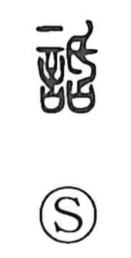

話

Kun: hanasu, hanashi | On: wa
to speak ・ to talk ・ story ・ conversation ・ to criticize ・ slander
Explanation
話 combines 言, speech, with 舌 as its phonetic. 舌's early form places a scraping blade above 口, the vessel holding written prayers or pledges. Damaging the contents would destroy the prayer's power.
The formation probably concerns words deliberately spoken to harm another: denunciation, slander, or a curse. Yet early usage also includes beneficial counsel. A poem contrasts the wise person, who acts upon good words, with the foolish person, who treats the same advice as an accusation.
話 therefore contains both favourable and hostile speech before developing its general range of talking, a story, or an account. Its history is wider than ordinary conversation, and the modern tongue-shaped component preserves an older ritual formation.